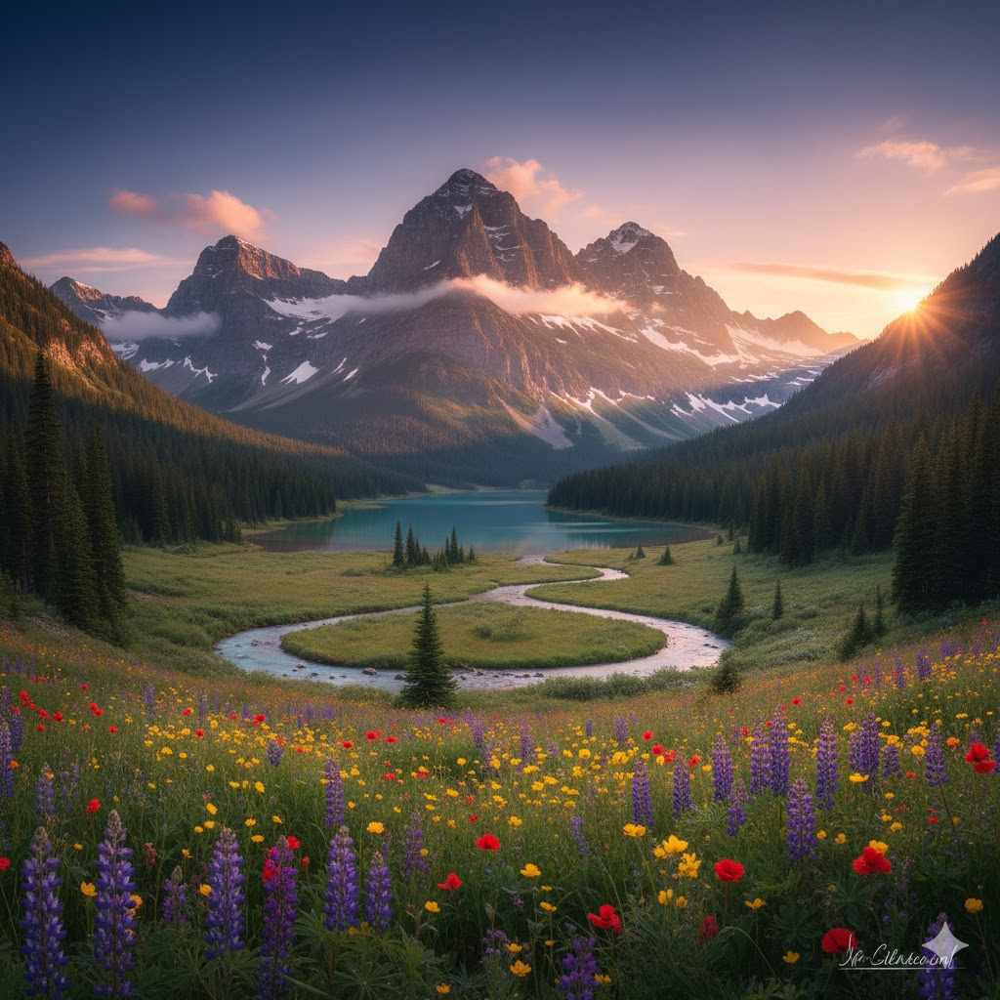

This majestic image captures a mountain valley at sunset, centered on a massive, snow-dusted peak overlooking a turquoise alpine lake.
The foreground is a vibrant meadow overflowing with purple lupines, red poppies, and yellow wildflowers, through which a serpentine stream gently winds.
Dense evergreen forests line the steep valley walls, and the entire scene is bathed in a warm,
golden light that creates a serene and dramatic natural spectacle.
THIS IS MARGIN
This is padding
This majestic image captures a mountain valley at sunset,
centered on a massive, snow-dusted peak overlooking a turquoise alpine lake.
The foreground is a vibrant meadow overflowing with purple lupines,
red poppies, and yellow wildflowers, through which a serpentine stream gently winds.
Dense evergreen forests line the steep valley walls, and the entire scene is bathed in a warm,
golden light that creates a serene and dramatic natural spectacle
This majestic image captures a mountain valley at sunset,
centered on a massive, snow-dusted peak overlooking a turquoise alpine lake.
The foreground is a vibrant meadow overflowing with purple lupines,
red poppies, and yellow wildflowers, through which a serpentine stream gently winds.
Dense evergreen forests line the steep valley walls, and the entire scene is bathed in a warm,
golden light that creates a serene and dramatic natural spectacle